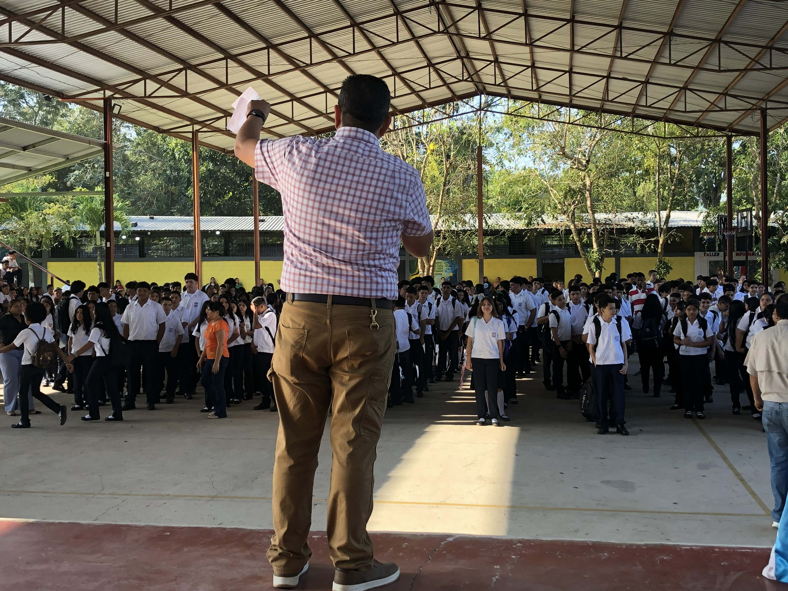

Oferta académica
Niveles disponibles
- III Ciclo de Educación Básica
- III Ciclo con Orientación Técnica: Estructuras Metálicas, Electricidad, Corte y Confección
- BTP en Informática
- BTP en Contaduría y Finanzas
- Bachillerato en Ciencias y Humanidades
Matrícula abierta 2026
Instituto Gubernamental Polivalente "Roberto Micheletti Baín", Agua Blanca Sur, El Progreso, Yoro.

Oferta académica
Horario de atención
8:00 AM - 12:00 PM
Durante el mes de enero de 2026. Para matrícula extraordinaria, acercarse a Secretaría durante febrero de 2026.
Primer ingreso
Inicio del proceso de matrícula para primer ingreso a Ciclo Básico y Bachillerato.
Continuación del proceso para todos los niveles y secciones del instituto.
Pasos sugeridos
Estos pasos ayudan a ordenar los documentos y evitar visitas incompletas durante el proceso de matrícula.
Verifica que las copias sean legibles y que las fotografías sean tamaño carnet.
Completa la documentación del proceso de matrícula antes de entregarla.
Acércate de lunes a viernes, de 8:00 AM a 12:00 PM, durante el período indicado.
Reingreso
Estos documentos aplican para estudiantes que ya pertenecen al instituto y realizarán su matrícula de reingreso.